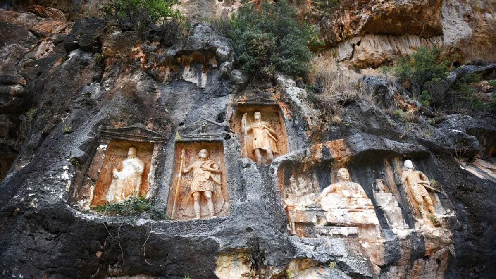
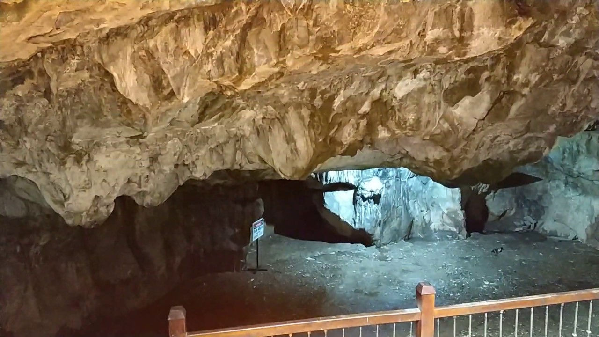
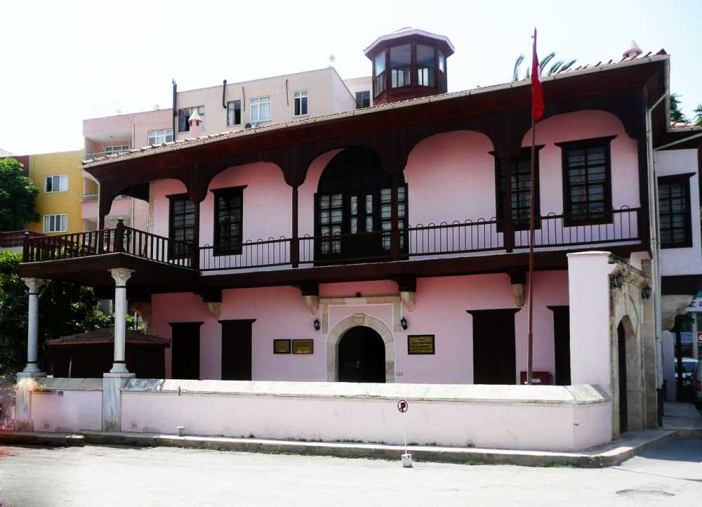

Erdemli ilçesine konumlanmış olan Kız Kalesi, Mersin şehir merkezine yaklaşık 60 kilometre uzaklıktadır. Kızkalesi'ne gitmek isteyen ziyaretçiler kendi özel araçlarıyla ya da toplu taşıma araçlarıyla kolayca ulaşım sağlayabilirler.
Birçok imparatorluğun hüküm sürdüğü bu kalenin yapımı M.Ö. 4. yüzyıla dayanmaktadır. Kaleyi yapanlar Grekler olarak bilinmektedir. Karadan yaklaşık 200 metre açıklıkta bulunan Kız Kalesi'ne, Deniz Kalesi de denmektedir.
Kalenin çoğu kısmı günümüze kadar korunmuş ve ziyarete açıktır. Her sene binlerce yerli ve yabancı turist tarafından ziyaret edilmektedir. Hakkında bilinen pek çok efsane olan Kız Kalesi'nin plajında yüzebilir, tekne ile kaleye ulaşabilirsiniz. Mükemmel tarihi yapısı ile mutlaka gezip görülmesi gereken bir yerdir.
Hafta sonu ziyarete kapalıdır.
Kız Kalesi'ne giriş ücreti 10 TL'dir.

Adamkayalar
Adamkayalar, Mersin'in Erdemli ilçesinde, Şeytan Deresi Vadisi'nde bulunmaktadır. Silifke şehir merkezine uzaklığı 43 kilometre, 45 dakikadır. Adamkayalar'a özel araçla ulaşım sağlamak mümkündür.
Derin bir vadide yer alan Adamkayalar, kayalara oyulmuş 12 kabartmadan oluşmaktadır. Turistlerin ilgisini fazlasıyla çeken bu kabartmaların hikayesi çok eski zamanlara; M.Ö. 3. yüzyıla dayanıyor. Yemyeşil bir coğrafyada ulaşımı zor bir vadinin yamacında 4 kadın, 11 erkek, 2 çocuk, bir dağ keçisi ve Roma kartalı figürleri bulunmaktadır. Bu eşsiz arkeolojik miras, açık hava müzesini andıran yapısı ile Mersin gezisinde mutlaka görülmesi gereken yerlerden birisi olmuştur. Yolu zor ve kısmen yapılmamış olan bu alana giderken uzun yürüyüşler yapmak zorunda kalacağınız için rahat ayakkabılar giyilmesi tavsiye edilir.
Adamkayalar'ı yılın her günü ziyaret edebilirsiniz.
Giriş ücreti bulunmamaktadır.

Eshab-ı Kehf (Yedi Uyurlar)
Eshab-ı Keyf diğer adıyla Yediuyurlar Mağarası, Mersin ilinin Tarsus ilçesi, Dedeler Köyü'nde bulunmaktadır. Ulaşım zorluğu bulunmayan mağaraya özel araç veya toplu taşıma araçları ile gidebilirsiniz.
300 metrekare büyüklüğündeki mağara hem Müslümanlar hem de Hristiyanlar için kutsal sayılır. Kuran-ı Kerim'de Kehf Suresinde söz edilen bu mağara hakkında çeşitli efsaneler bulunuyor. Mağara girişinden önce bulunan camiyi ziyaret edebilir oradan da mağarayı gezip bilgi edindikten sonra yakında bulunan restoranda yemek yiyebilir, son olarak da hediyelik eşya satan dükkanlardan alışveriş yapabilirsiniz.
Mağarayı yılın her günü ziyaret edebilirsiniz.
Giriş için hiçbir ücret ödemeniz gerekmemektedir.

Taşucu Atatürk Evi Müzesi
Mersin'nin Taşucu beldesinden bulunan Taşucu Atatürk Evi Müzesi, Taşucu Limanına yalnızca 5 dakikalık yürüme mesafesindedir. Mersin şehir merkezine 113 kilometre uzaklıktadır. Konumu itibariyle ulaşım oldukça kolaydır. Taşucu Atatürk Evi Müzesi ‘ne özel araçla gidebileceğiniz gibi toplu taşıma araçlarını da kullanabilirsiniz.
Taşucu Atatürk Evi Müzesi, Selanik'te Mustafa Kemal'in doğup büyüdüğü ev ile birebir aynı yapılmıştır. Ziyaretçilerin merakla ziyaret ettiği bu müze evde Atatürk'e ait bazı kişisel eşyalar ile o döneme ait fotoğraf ve belgeler sergilenmektedir. Mersin gezintisinde ziyaret edilmesi gereken önemli tarihi yerlerden biridir.